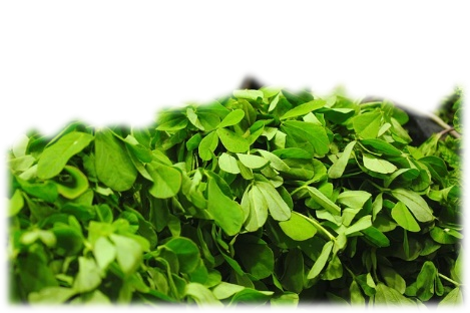
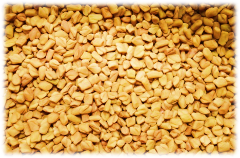
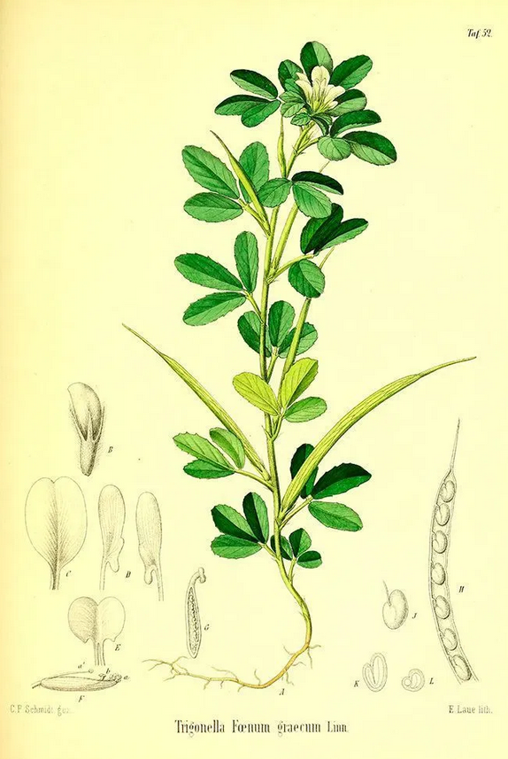

Native Indian Spices
Fenugreek (Trigonella foenum-graecum)
Fenugreek is one of the super spices cultivated in India that has a slew of health benefits from reducing sugar levels, aiding digestion to increasing milk supply in nursing mothers. It is also used in hair masks as a conditioning agent.
Apart from the root all parts of the plant including the fruit/seeds are consumed in Indian cuisine. The leaves have a nutty and bitter taste and are used in both fresh and dried forms in recipes. The seeds also have a nutty and bitter taste and their bitterness can be reduced by toasting the seeds. The toasted seeds are used in spice mixes and in several recipes throughout India.
